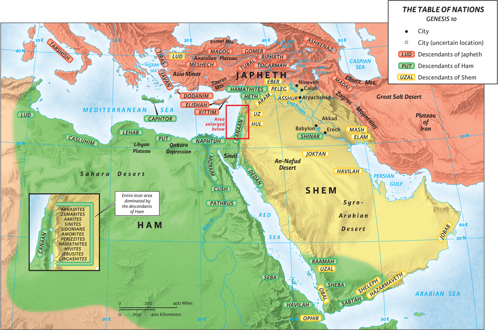

On Wednesday night in Bible study, the class I taught discussed Peter’s sermon in Acts 2 and the amazing result that came after that. One connection we did not make that is really cool is the connection that Acts 2 has with Genesis 11.
In Genesis 11, the people of the earth have decided to disobey God’s command to “fill the earth” (9:1, 7). This plan to have the world filled with people originated in the garden: 1:28. God wanted the world to be filled with people! However, when we get to Genesis 11, the people have a different plan. They want to build a city and make a name for themselves or else they will be scattered. The people are in direct disobedience!
“…otherwise we will be scattered abroad over the face of the whole earth.” (Gen 11:4, NASB95)
In the end, God confuses the peoples’ languages and causes them to scatter. In the previous chapter, Genesis lays out the three sons of Noah (Shem, Ham, and Japheth) and where their descendants lived. Genesis 11, then, helps explain how the separation of Noah’s descendants began.

What is interesting in Genesis 11 is that God did not want the people to be a single people but wanted them to spread out. The way He accomplished that mission was by causing all the people to speak different languages.
When we get to Acts 2, however, God does something different. On the day of Pentecost, there are a lot of people in Jerusalem. Some probably stayed after the Passover, just 50 days earlier. In Acts 2:9–11 we see a long list of places where these people are from. The first thing that is striking is that these places are places where Noah’s descendants lived — compare both maps. What is more, the apostles received the Holy Spirit and began to speak different languages so that “each one of them [the people] was hearing them [the apostles] speak in his own language” (Acts 2:6). God was bringing back, in a sense, Noah’s descendants, reunifying their language, and then He does something else.

Peter preaches his sermon on who Jesus really is and how the people killed Him. When he is done, the people are “pierced to the heart” (Acts 2:37). They ask what they need to do. They repent, are baptized, and become part of God’s people. These people from these different regions all come together and become one people. The oneness of God’s people is seen in the rest of the chapter (2:42–47). There are many passages in the New Testament that discuss God’s people being unified.
What God did in Acts 2 was a spiritual reversal of Genesis 11. But we still have the same calling to “fill the earth.” In Matthew 28:19, we are told:
“Go therefore and make disciples of all the nations, baptizing them in the name of the Father and the Son and the Holy Spirit.” (Matt 28:19, NASB95)
It is God’s will for the earth to be filled up with one people: Christians.
There is more to say about Genesis 11 and the New Testament, but I wanted to get your mind thinking about these connections as you study Acts in your churches or personal studies.
To Him be the Glory.